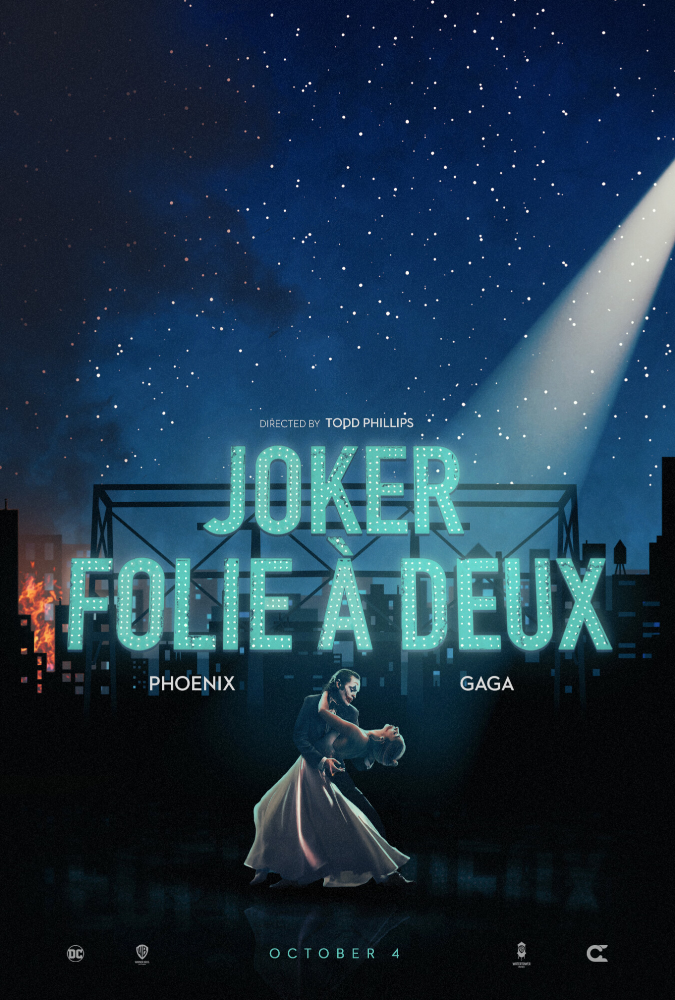
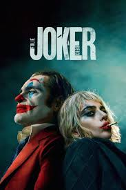
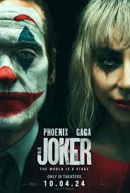
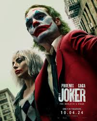
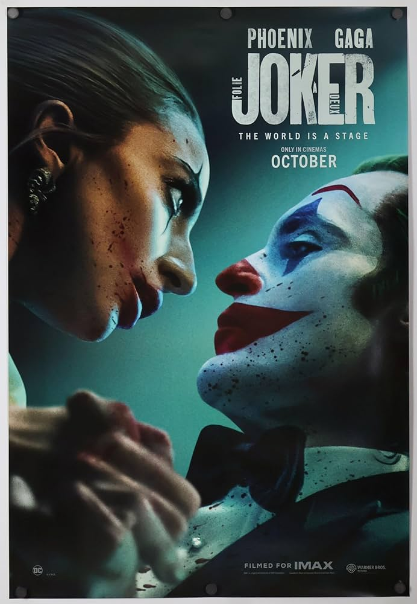

"A mesmerising yet deeply flawed sequel that struggles to find its footing. Pheonix and Gaga are electric, but the musical elements feel forced."
- David Ehrlich,
IndieWire


"Visually stunning but narritively hellow. The attempt to blend gritty realism with musical fantasy falls flat"
- Peter Debruge,
Variety
"An ambitious misfire. While the performances are commendable, the film lacks the raw power of its predecessor"
- Manohla Dargis,
The New York Times
"A daring experiment that doesn't quite pay off. The chemistry between the leads is undeniable, but the plot meanders."
- Justin Chang,
Los Angeles Times
"Joker: Folie a Deux is a beautifully shot, yet ultimately frustrating experience. It's a film at war with itself"
- Robbie Collin,
The Telegraph
"A polarizing and provecative piece of cinema. It will undoubtedly divide audiences, but its artistc integrity is unquestionable"
- Justin Chang,
Los Angeles Times